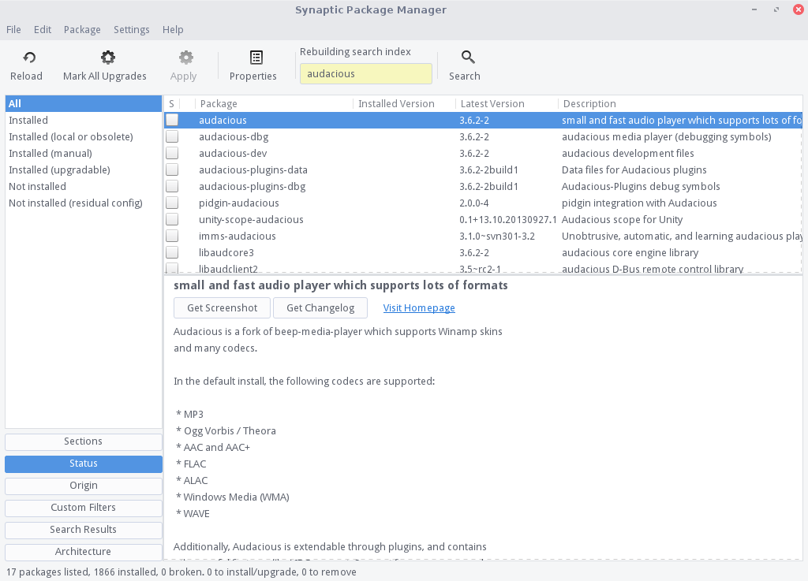
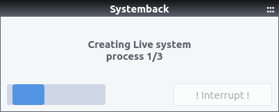
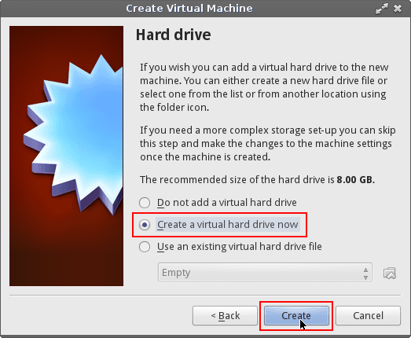
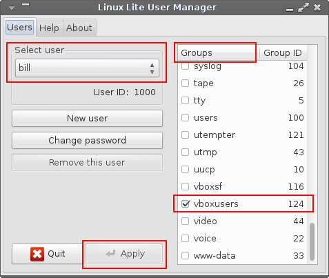
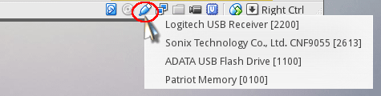
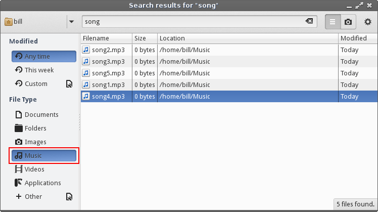

Catfish - a file and folder search utility.
KeePassX - create and store strong passwords.
Systemback - Creating a Restore Point.
Systemback - Returning to a Restore Point.
Systemback - Creating a Live ISO of your installation.
VirtualBox - use a virtual environment to run other operating systems within Linux Lite.
General Information
This page is a work in progress. Over time more tutorials will be added to it. Some of them may deal with software that is already included in the standard Linux Lite installation. Many will be for software that needs to be installed first because it is not part of the standard installation. Two choices listed under Menu, System will be used frequently for installing software.
What you will see when installing from Menu, System, Lite Software.

Lite Software below. Learn how to use it here.

What you will see when installing from Menu, System, Install/Remove Software (Synaptic Package Manager).

The Synaptic Package Manager below. Learn how to use it here.

Systemback
Systemback allows you to create restore points and live ISO images of your system. Just like on Windows, you can create a restore point, and then restore from one.
NOTE: Creating a restore point does not save all your documents, pictures, videos etc. It only backs up your applications. You must back up your personal files first via Menu, Accessories, Backups before creating a restore point.
Click on Menu, System, Systemback. Enter your password and click on OK.
NOTE: Make sure all programs are closed and no files are open during this operation. Do not interfere with this process or you risk corrupting your restore point.
Under Point Operations, click on Create new.

This will take some time, so please be patient.
Once that has finished, the new restore point will appear under Restore points.
Click on Menu, System, Systemback. Enter your password and click on OK.
Under Restore points, select a restore point date that you want to return to and click on System restore.
Leave the settings untouched as they are in the image below.
Now click on Next.
You will get a confirmation message like the one below. When you are ready, click on Start.
The restore process will take some time, so please be patient.
Once the restore has completed, you will get a countdown dialogue telling you the computer will restart with 30 seconds.
Once your computer has restared, it will be returned to the restore point you created.
Creating a Live ISO of your installation
Once you have set up your system up exactly as you want it with all of your programs installed, you can then create a live ISO that you can burn to USB or DVD. If your system becomes corrupted, or you want to share your custom creation with others, or you want the same installation on multiple computers in a business or organization environment, the following tutorial will get you there.
NOTE: Make sure all programs are closed and no files are open during this operation. Do not interfere with this process or you risk corrupting your ISO image.
Click on Menu, System, Systemback. Enter your password and click on OK.
From the main window, select Live system create.
Leave the options as they are shown in the image below. When you are ready, click on Create new.
The image creation process will take some time, so please be patient.

Once the image has been created, click on OK.

Now click on and highlight the image under Created Live Images then click on Convert to ISO.
The ISO conversion process will take some time, so please be patient.
Next, open your home folder and click the up arrow under the menu. This will show you the location of the ISO image.
You can now burn the the ISO image with your favorite ISO burning software. We recommend you to use the ones shown here.
KeePassX
KeePassX is a password manager program used for securely creating and storing passwords. It includes a password generator that will create strong passwords for you. When using KeePassX, you only need to remember one password - the one you use for opening the program. Once your KeePassX data file is opened, transferring a password from the program to its entry form is done quickly and easily with a few mouse clicks.
To install, go to Menu, System, Lite Software, type the number corresponding to KeePassX from the list shown in the pop-up window and enter your password when prompted for it.
After it's installed you can start it from Menu, Accessories, KeePassX. On your first startup you will need to create a new database for your passwords - click the interface button for that in the upper-left corner.
You will then be prompted to make a master password for the database that will contain your passwords. This is the only password you will need to remember. Do your best to make one that you not only can remember, but is strong also. Make it reasonably long with a combination of letters, numbers and other characters if possible.
After entering your password you will see that the database is now populated with two groups shown on the left: Internet and eMail. Groups are just ways to organize your passwords according to their use. (You can edit, delete and create new groups by clicking 'Groups' along the top of the window.)
To create a password entry, click the 'Add New Entry' button along the top.
Select which group the password should fall under, fill-in your information, then enter your password (if you already have one) or click on the 'Gen' button to bring up the Password Generator to make one for you.
In the Password Generator you can specify the types of characters to include, the password length, etc. along with the option to enable entropy collection to further strengthen the password.
If you enable entropy collection move your mouse around randomly when the collection window pops up. The mouse data will be incorporated by the algorithm to produce the random password.
When it's done, hit 'OK' and it will fill-in the password it produced for you.If you would like to see it, click the eye symbol next to the password box.
Click 'OK' when you are satisfied with everything, your new password entry will now appear in the list for the group you put it under. When you are done making your entries (or changes to existing ones), make sure to save everything by clicking the Save Database button along the top of the window.

A dialog box will pop-up for you to specify a name for the file and where to save it. It will automatically put the '.kdb' (keepassx data base) extension on the file name and it will default to saving it in your home folder. (You can designate a different location to save to if you'd like.) So the example below will save a file called 'my-keepassx-data.kdb' under /home/bill.
VERY IMPORTANT!
Be sure to make at least one extra copy of your '.kdb' file to an external source, like a USB backup stick. If
your hard drive fails, or something else goes wrong that prevents you from retrieving your files you will lose all of your passwords and access to the
accounts you set them for. That will not be a pleasant experience if you don't have a backup copy made - so do that immediately and
update it everytime you make changes to the database.
Using KeePassX is simple!
Start KeePassX and highlight the site you want to log into. Navigate to the website, then click the person icon along the top of the KeePassX window to copy your username to the clipboard temporarily. Right-click in the website entry field for it and paste. Click the key icon (next to the person icon) to copy the password to the clipboard and paste it into the website password field. That's all there is to it (Note: the information is automatically deleted from the clipboard after 20 seconds. You can change that and other settings by going to Extras, Settings, Security.)

Additional Keepassx Resources
KeePassX Homepage
KeePassX Help Forum
VirtualBox
The VirtualBox (VirtualBox) program allows you to run other OS's (operating systems) within your main OS by creating a container of sorts for them to run in, independently from the main OS. You install other OS's to VirtualBox just like you would to a normal hard drive. VirtualBox creates a virtual hard drive for you to install to and the result is referred to as a Virtual Machine (VM).
You can install to VirtualBox using a bootable CD or DVD. Even more conveniently, you can install using a downloaded ISO file without the need to burn it first to a CD/DVD. You can also just boot ISO files and run them as a live environment - just as you would booting your computer from a live CD/DVD/USB - without installing it if you prefer.
Some common uses for VirtualBox are:
- Install a second copy of your main OS for testing and experimentation.
- Install other Linux distros that you want to use regularly, but do not want to install as a dual-boot on your computer.
- Install, or just run live, other distros for testing purposes.
- Install Windows so you can run its programs within Linux without rebooting the computer.
(Note: Microsoft considers that to be a separate installation of its software and requires another user license for that.)
Installing VirtualBox
To install VirtualBox, go to Menu, System, Lite Software and find it from the list of software to install. Enter its corresponding number and your password when asked for it. VirtualBox will take a couple of minutes to fully install, so just wait until the screen tells you it is done.
After installation is complete, you will find VirtualBox under both the Accessories and System sections of the Menu.
VirtualBox does not come pre-configured to use USB sticks. You need to download an extra package for that from their website. Go ahead and start VirtualBox, then follow the steps below to install what you need for USB support.
NB: Version numbers for VirtualBox - Please note that new versions are being released regularly, the information here is provided as a guide only. The latest version number of VirtualBox will change with time.
You need to know the version number of your VirtualBox installation in order to download the matching "Extension Pack". It should be version 4.3.10; but double-check that by clicking Help, About VirtualBox from the main VirtualBox window. Then look along bottom of pop-up window for the version number.

For the latest version, go to this VirtualBox webpage. Otherwise, go here, look for your version number and follow same steps as below to continue.
Find the "Extension Pack" listed under the heading for your VirtualBox version and click on All supported platforms to download it. Save the download to your Downloads folder.
Once downloaded, in VirtualBox main window, go to File, Preferences and click Extensions on the left side.
Look to the right side of the window and you will see two icons. Click the top icon to Add Package.
It will open your Downloads folder. Click to highlight the extension pack you just downloaded. Click Open to install it to VirtualBox.
A window will appear confirming that you want to install the extension pack. Click Install, then scroll down the license agreement and hit I Agree to the terms of use.
Enter your password when asked for it and finish the installation. When complete, you will see the extension pack added under Extensions in the VirtualBox Preferences, (VirtualBox main window: File, Preferences).
Using VirtualBox
VirtualBox can boot from either a live CD/DVD or an ISO file saved to your hard drive (HDD). In the following example we'll use a downloaded ISO file. If you are using a bootable CD/DVD, go ahead and load it into the tray before we get started.
From main VirtualBox window, click the New button to make a new virtual machine environment.
Next, choose a Name for the virtual machine, the Type of operating system it will be, and Version of the operating system. When filling in version, specify either 32 or 64-bit system and choose the closest fit for the OS you will be installing if you don't see a listing that matches exactly under the Version drop-down box.
In this example, we will make a new machine for another Ubuntu-based distro called Voyager and we are using its 64-bit version. There is no listing for Voyager, so we'll just choose Ubuntu 64-bit because that is what it is based on. (If you made a virtual machine [VM] with Linux Lite installed, you would also choose Ubuntu for the same reason.) Click Next to continue.
Decide how much of your RAM (memory) you want dedicated to operating the VM. 512MB-2GB will likely be fine most of the time. Do not dedicate more than half of your RAM to the VM - that could cause problems with the operation of your host OS, Linux Lite. (The VM is operating from within the host OS - you don't want the VM using more resources than the host itself.) In this example, the computer has 8GB of RAM, so 2GB was allotted to the VM.
The next screen asks if you want to Create a virtual hard drive now. That is what we want, so we tick that radio button and click Create.

We'll choose VDI (VirtualBox Disk Image) from the Hard Drive File Type screen.
We'll choose Dynamically allocated from the Storage on physical hard drive screen.
On the next screen we make the virtual drive 10GB. (VirtualBox will dedicate space from your hard drive for the virtual drive - so be sure you have enough room on your HDD to accommodate creating the virtual drive.)
After hitting Create your new VM will be listed along the left-hand side of the main VirtualBox window. (At this point, it is just an empty container.)
You can adjust a few settings for the VM either before or after installing the OS. We'll do it before installation. Highlight the VM and click Settings. Then, click Display along the left side and adjust the amount of video memory you want the VM to have. (Default is 12MB, we'll give it 64MB in this example.) Also, click to Enable either 3-D or 2-D Acceleration. (If one gives you an "invalid settings" message, unclick it and choose the other.)
Now, click USB on the left side and make sure that the USB controllers are enabled. This will allow you to copy to/from USB sticks in the VM.

Click OK when done to get back to main window. With the VM highlighted on the left of main window, click the Start arrow to begin installation.
The first screen you see will ask you what to use as your installation source and the CD/DVD drive will likely be already listed. If that is what you are using and the disk is loaded in the tray, go ahead and hit Start.
In this example, we are using an ISO file that has been downloaded to the hard drive. For that, click the icon to the right of the CD/DVD drive box to bring up a window for navigating to the location where you saved the ISO file.
After you've found and selected your ISO, it will appear filled in the source box. Hit Start and it will now boot from the live ISO/CD/DVD.

When the live environment finishes loading, click the install icon on the desktop to begin the installer. The installation process is just the same as if you were installing to the computer normally. All references on the "Installation Type" screen are to the virtual hard drive. When asked if you want to "Erase disk and install", it is NOT going to erase your real hard drive - it is talking about the virtual hard drive. (Same thing if you choose 'Something else' and partition the drive manually.)
After install is complete, reboot the VM. If the installation disk appears to be stuck and not rebooting, click your mouse somewhere inside the VM window, then hit the ENTER key. If nothing happens, click the "x" on the VM window and choose to Shutdown the machine. Then just highlight the VM and hit the Start arrow again.
In the VM, you can do much the same as when installed for real on your computer. You can install things, download updates, etc., and it all happens within the virtual environment on the virtual HDD.
Whenever you want to shutdown a running VM, shutdown using the normal shutdown method of the OS in the VM - not by closing the VM window. (If the VM OS was Linux Lite, you would click Menu, Logout, Shutdown, just like on your computer.)
Using USB's in VirtualBox
Assuming you've already added the the VirtualBox "Extension Pack",to begin using USB's in your new VM, you need to add your username to the "vboxusers" group. (You only need to do that once, not for every individual VM you make.) You should perform the following steps while no VM's are open.
Open the Linux Lite (not VirtualBox) Settings Manager, Menu, Settings, Settings Manager and select the User Manager.
With your username showing under Select user, scroll down the list in the Groups column and place a check in the box next to vboxusers to add yourself to that group and hit Apply.

Close out the User Manager, the Settings Manager and any other open programs.
Log out of computer, then log back in for the new setting to take effect.
Open VirtualBox and start your new VM.
Once up and running you will see a little USB icon along bottom right edge of the VirtualBox window. Right-click on it to choose the USB you want to use.

Additional VirtualBox Information Sources:
VirtualBox Homepage
VirtualBox User Manual
VirtualBox Help Forums
Catfish
Catfish is an easy to use GUI file search utility found under Menu, Accessories, File Search.
Upon opening Catfish, you will see this file search window:
Catfish uses the locate command to search for files. The locate command relies on a database it maintains of the files on your computer. That database gets automatically updated periodically - normally once a day. Before conducting a search it is a good idea to manually update the database index to make sure that any file changes made since the last update are reflected in the search results. Click the gear icon in upper-right corner and choose Update Search Index.
You can also use the gear button for other options like displaying advanced settings in the search window. The advanced settings display lets you filter search results by file modification dates, file types, file extensions, etc.
The example below shows a search in my Home folder for any file with "song" in the file name.

To limit the results to only music files, simply click "Music" under "File Type" in the advanced settings.
